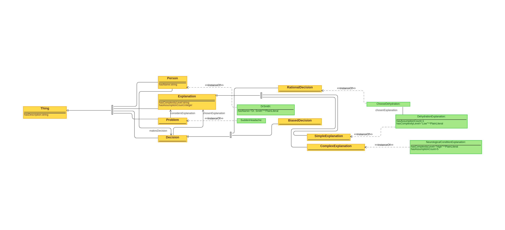

Examples of usage
Occam's Razor is not a cognitive bias but a problem-solving principle that suggests when faced
with competing hypotheses or explanations, the one that makes the fewest assumptions should be
selected. It's often summarized as "the simplest explanation is usually the right one." However,
applying Occam's Razor can lead to bias if it oversimplifies complex realities or ignores
significant evidence. Here are examples where relying too heavily on Occam's Razor could lead to
biased conclusions:
- Medical Diagnosis: A doctor attributes a patient's range of symptoms solely
to stress, overlooking the possibility of a rare but fitting illness because it seems less
likely due to its complexity.
- Criminal Investigations: Investigators immediately focus on the most
obvious suspect without considering more complex scenarios that involve multiple parties or
unusual motives, potentially overlooking crucial evidence.
- Science and Research: A researcher favors a simpler model to explain a
phenomenon, despite data suggesting a more complex theory might be accurate, because the
simpler model aligns with Occam's Razor.
- Historical Analysis: Historians might prefer a straightforward explanation
for an event, such as economic factors leading to a war, ignoring the interplay of
political, cultural, and personal factors that could offer a more nuanced understanding.
- Technology Troubleshooting: A technician assumes a common, simple issue is
causing a device's malfunction, without exploring the possibility of a more complex problem
involving multiple system components.
In each of these examples, the bias towards simplicity under the guise of Occam's Razor can
prevent a deeper investigation, potentially leading to incorrect conclusions or oversights.
Creating an Ontology
Classes:
- Person (Judge). The individual evaluating explanations for a problem.
- Problem. An issue or question that requires explanation.
- Explanation. A proposed understanding or solution to a problem.
- SimpleExplanation (Subclass of Explanation). An explanation that is
straightforward and makes the fewest assumptions.
- ComplexExplanation (Subclass of Explanation). An explanation that is more
detailed and makes more assumptions.
- Decision. The outcome of the evaluation process between different
explanations.
- RationalDecision (Subclass of Decision):A decision that favors the simpler
explanation, aligning with Occam's Razor.
- BiasedDecision (Subclass of Decision): A decision that favors a more
complex explanation, possibly due to bias or other factors.
Properties (Attributes and Relationships):